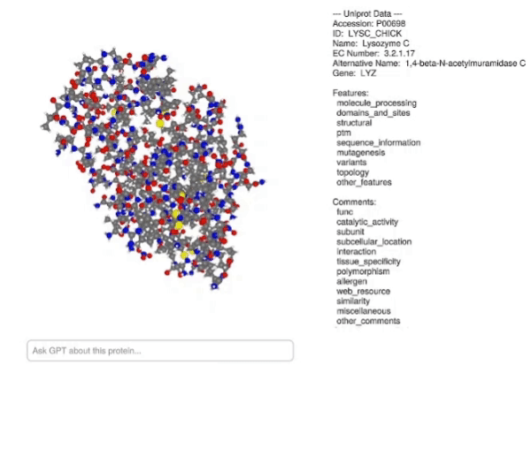

Plotting database information
In this demo a structure is plotted along with information about the protein and a text box which can take advantage of OpenAI.jl to generate a description from a prompt.
Copy-pastable code (almost, you need your OpenAI API key)
using BioMakie
using BioStructures
using GLMakie
using OrderedCollections
using JSON3
using OpenAI
using TextWrap
pdb = retrievepdb("2vb1")
pdata = plottingdata(pdb)
dat = getuniprotdata("P00698"; include_refs = true)
txtbuffer = IOBuffer()
uniprottxt = begin BioMakie.showsummary(txtbuffer, dat); String(take!(txtbuffer)) end
fig = Figure(resolution = (900, 700))
layout = fig[1,1] = GridLayout(10, 9)
plotstruc!(layout[1:10,1:5], pdata; resolution = (600, 700))
ENV["APIKEY"] = "{Your API key}" # Need to set your API key here!
model = "gpt-3.5-turbo"
txt = Observable("")
tbox = Textbox(layout[4,6:9]; placeholder = "Ask GPT about this protein...", width = 350)
on(tbox.stored_string) do t
r = create_chat(
ENV["APIKEY"],
model,
[Dict("role" => "user", "content"=> t)]
)
txt[] = wrap(r.response[:choices][begin][:message][:content]; width = 50)
end
ax = Axis(layout[1:3,6:9])
GLMakie.text!(ax, uniprottxt, fontsize = 16, align = (:left, :top))
xlims!(ax, (0, 1))
ylims!(ax, (-0.5, 0))
hidespines!(ax)
hideydecorations!(ax)
hidexdecorations!(ax)
ax = Axis(layout[5:10,6:9])
GLMakie.text!(ax, txt, fontsize = 16, align = (:left, :top))
xlims!(ax, (0, 1))
ylims!(ax, (-0.5, 0))
hidespines!(ax)
hideydecorations!(ax)
hidexdecorations!(ax)
Database information explanation
First are the regular imports.
using BioMakie
using BioStructures
using GLMakie
using OrderedCollections
using JSON3
using OpenAI
using TextWrapAcquire the data
Use BioStructures to retrieve a PDB file, then prepare the plotting data.
pdb = retrievepdb("2vb1")
pdata = plottingdata(pdb)Get the data from the web database using the associated accession ID and read it. Here I use the getuniprotdata function to get the data and save it to a file, then I gather the summary information using showsummary and utilize a IOBuffer to capture the string.
dat = getuniprotdata("P00698"; include_refs = true)
txtbuffer = IOBuffer()
uniprottxt = begin BioMakie.showsummary(txtbuffer, dat); String(take!(txtbuffer)) endSet up the figure and plot the structure
fig = Figure(resolution = (900, 700))
layout = fig[1,1] = GridLayout(10, 9)
fig = plotstruc!(layout[1:10,1:5], pdata; resolution = (600, 700))Set up the text box to prompt GPT-3.5-turbo
First you need to acquire an API key for OpenAI. Then we can set up the text box using that. The on function is used to update the txt Observable with the response when you submit a prompt using the text box.
ENV["APIKEY"] = "{Your API key}"
model = "gpt-3.5-turbo"
txt = Observable("")
tbox = Textbox(layout[4,6:9]; placeholder = "Ask GPT about this protein...", width = 350)
on(tbox.stored_string) do t
r = create_chat(
ENV["APIKEY"],
model,
[Dict("role" => "user", "content"=> t)]
)
txt[] = wrap(r.response[:choices][begin][:message][:content]; width = 50)
endPlot the text
We basically plot the text onto a regular axis and hide the decorations, grid, etc.
ax = Axis(layout[1:3,6:9])
GLMakie.text!(ax, uniprottxt, fontsize = 16, align = (:left, :top))
xlims!(ax, (0, 1))
ylims!(ax, (-0.5, 0))
hidespines!(ax)
hideydecorations!(ax)
hidexdecorations!(ax)
ax = Axis(layout[5:10,6:9])
GLMakie.text!(ax, txt, fontsize = 16, align = (:left, :top))
xlims!(ax, (0, 1))
ylims!(ax, (-0.5, 0))
hidespines!(ax)
hideydecorations!(ax)
hidexdecorations!(ax)This page was generated using Literate.jl.